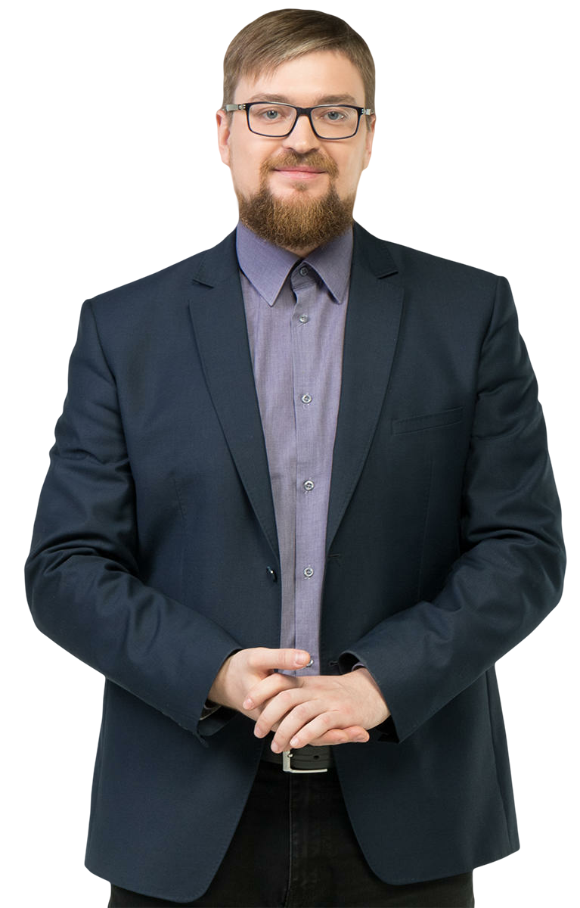

Módulo Formativo · iSpring · Integra Consultora
Diseño Organizacional
Fundamentos
Concepto · diferenciación e integración · modelos mecanicista y orgánico · tipos de departamentalización
¡Hacé click en cada objetivo para ver más! ¡Empecemos!
Es el proceso de construir y adaptar continuamente la estructura de una organización para que alcance sus objetivos y estrategias. Esa estructura ordena y conecta sus áreas, personas, tareas y recursos.
La estructura como esqueleto
Contiene e integra órganos, personas, tareas, relaciones y recursos. Coordina los elementos vitales de la organización.
Doble dependencia
Depende hacia afuera de la estrategia para alcanzar objetivos, y hacia adentro de la tecnología que la organización utiliza.
Cuatro variables
Factores ambientales, dimensiones anatómicas, aspectos de las operaciones y consecuencias conductuales.
El diseño organizacional se sostiene sobre dos procesos opuestos y complementarios. Uno divide y especializa el trabajo; el otro coordina y une las partes para que la organización funcione como un todo.
Diferenciación
Divide y especializa el trabajo.
- Horizontal → estructuras planas
- Vertical → estructuras piramidales
- Espacial → dispersión geográfica
Integración
Coordina y une las partes.
- Vertical → jerarquía, reglas y procedimientos
- Horizontal → equipos y fuerzas de tarea
Según las dimensiones del diseño —formalización, centralización, jerarquía, especialización— una organización se ubica entre dos modelos opuestos, que son los extremos de muchas combinaciones posibles.
Mecanicista
- Alta formalización y centralización
- Autoridad jerárquica y cadena de mando
- Especialización y estandarización
- Comunicación vertical y formal
Orgánico
- Poca formalización, decisiones descentralizadas
- Equipos multifuncionales
- Comunicación informal y en red
- Adaptable e innovadora
A medida que las organizaciones crecen, agrupan tareas y personas en departamentos según distintos criterios. En la práctica, cada organización combina varios de ellos.
En la práctica
Ninguna organización usa un solo criterio. La departamentalización funcional se aplica en los niveles altos; se complementa con equipos por proyecto para evitar feudos. La clave está en equilibrar especialización y coordinación.
El diseño organizacional busca el equilibrio entre especializar y coordinar.
Ninguna organización usa un solo criterio: combina varios según su tamaño, estrategia y entorno. La clave está en equilibrar la especialización de cada área con la coordinación entre todas.
Contenido desarrollado por Integra Consultora
